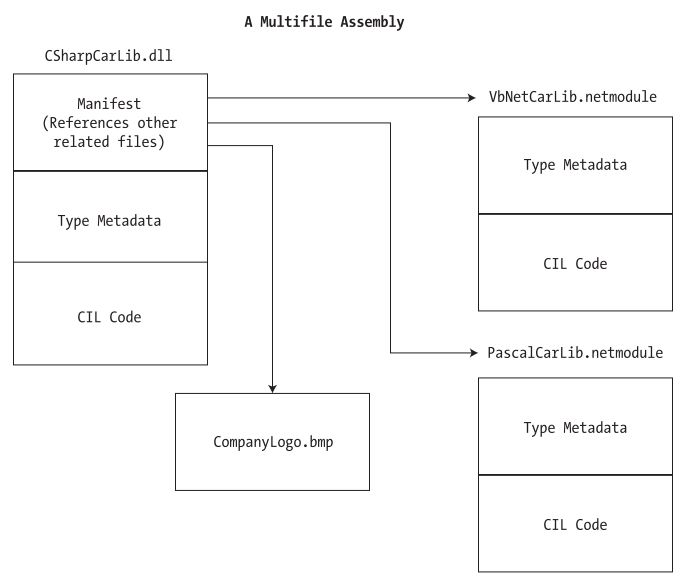

Chapter 11 - Introducing .NET Assemblies
Content
One major aspect of the .NET platform is the notion of binary reuse, where applications make use of the types contained within various external assemblies (aka code libraries).
The point of this chapter is to examine the core details of creating, deploying, and configuring .NET assemblies.
In this chapter, you'll first learn the distinction between single-file and multifile assemblies, as well as "private" and "shared" assemblies.
Next, you'll examine exactly how the .NET runtime resolves the location of an assembly and come to understand the role of the Global Assembly Cache (GAC),
application configuration files (*.config files), publisher policy assemblies, and the System.Configuration namespace.
The role of .NET assemblies
An assembly is a versioned, self-describing binary file hosted by the CLR. Despite that .NET assemblies have exactly the same file extensions (*.exe or *.dll) as previous Win32 binaries,
they have very little in common under the hood. Here are some of the benefits provided by the assembly format.
Assemblies promote code reuse
A code library (also termed a class library) is a *.dll that contains types intended to be used by external applications. When you are creating executable assemblies,
you will no doubt be leveraging numerous system-supplied and custom code libraries as you create the application at hand. However, a code library need not take a *.dll file extension.
It is perfectly possible for an executable assembly to make use of types defined within an external executable file. In this light, a referenced *.exe can also be considered a "code library".
Regardless of how a code library is packaged, the .NET platform allows you to reuse types in a language-independent manner. It is possible to not only allocate types across languages, but derive from them as well.
The point is that when you begin to break apart a single monolithic executable into numerous .NET assemblies, you achieve a language-neutral form of code reuse.
Assemblies establish a type boundary
A type's fully qualified name is composed by prefixing the type's namespace to its name. However, the assembly in which a type resides futher establishes a type's identity. For example,
if you have two uniquely named assemblies (MyCars.dll and YourCars.dll) that both define a namespace (CarLibrary) containing a class named SportsCar, they are considered unique types in the .NET universe.
Assemblies are versionable units
.NET assemblies are assigned a four-part numerical version number of the form <major>.<minor>.<build>.<revision>.
If you do not explicitly provide a version number using the [AssemblyVersion] attribute, the assembly is automatically assigned a version of 0.0.0.0.
This number, in conjunction with an optional public key value, allows multiple versions of the same assembly to coexist in harmony on a single machine. Formally speaking,
assemblies that provide public key information are termed strongly named. Using a strong name, the CLR is able to ensure that the correct version of an assembly is loaded on behalf of the calling client.
Assemblies are self describing
Assemblies are regarded as self-describing in part because they record every external assembly it must have access to in order to function correctly.
Assembly's manifest is a blob of metadata that describes the assembly itself (name, version, external assemblies, etc).
In addition to manifest data, an assembly contains metadata that describes the composition (member names, implemented interfaces, base classes, constructos and so forth) of every contained type.
Assemblies are configurable
Assemblies can be deployed as "private" or "shared". Private assemblies reside in the same directory (or possibly a subdirectory) as the client application making use of them.
Shared assemblies, on other hand, are libraries intended to be consumed by numerous applications on a single machine and are deployed to a specific directory termed the Global Assembly Cache (GAC).
Regardless of how you deploy your assemblies, you are free to author XML-based configuration files. Using these configuration files, the CLR can be instructed to "probe" for assemblies under a specific location,
load a specific version of a referenced assembly for a particular client, or consult an arbitrary directory on your local machine, your network location, or web-based URL.
Understanding the format of a .NET assembly
A .NET assembly consists of the following elements:
- A Win32 file header
- A CLR file header
- CIL code
- Type metadata
- An assembly manifest
- Optional embedded resources
The Win32 file header establishes the fact that the assembly can be loaded and manipulated by the Windows family of operating systems. This header data also identifies the kind of application
(console-based, GUI-based, or *.dll code library) to be hosted by the Windows operating system.
The CLR file header is a block of data that all .NET files must support in order to be hosted by the CLR. In a nutshell, this header defines numerous flags that enable the runtime to understand the layout of the managed file.
For example, flags exist that identify the location of the metadata and resources within the file, the version of the runtime the assembly was build against, the value of the optional public key, and so forth.
At its core, an assembly contains CIL code, which as you recall is a platform and CPU agnostic intermediate language. At runtime, the internal CIL is compiled on the fly (using a just-in-time [JIT] compiler) to platform and CPU specific instructions.
Given this architecture, .NET assemblies can indeed execute on a variety of architectures, devices and operating systems.
An assembly also contains metadata that completely describes the format of the contained types as well as the format of external types referenced by this assembly. The .NET runtime uses this metadata to resolve the location of types
(and their members) within the binary, lay out types in memory, and facilitate remove method invocations.
An assembly must also contain an associated manifest (also referred to as assembly metadata). The manifest documents each module within the assembly, establishes the version of the assembly, and also documents any external assemblies referenced by the current assembly.
Finally, a .NET assembly may contain any number of embedded resources such as application icons, image files, sound clips, or string tables. In fact, the .NET platform supports satellite assemblies that contain nothing but localized resources.
This can be useful if you wish to partition your resources based on a specific culture for the purposes of building international software.
Single-file assemblies and multifile assemblies
An assembly can be composed of multiple modules. A module is really a generic term for a valid .NET binary file. In most situations, an assembly is composed of a single module.
In this case, there is one-to-one correspondence between the (logical) assembly and the underlying (physical) binary (hence the term single-file assembly).
Single-file assemblies contain all of the necessary elements (header information, CIL code, type metadata, manifest and required resources) in a single *.exe or *.dll package.
On the other hand, a multifile assembly is a set of .NET *.dlls that are deployed and versioned as a single logic unit. Formally speaking, one of these *.dll is termed the primary module and contains the assembly-level manifest.
The manifest of the primary module records each of the related *.dll files it is depend upon.
The secondary modules in a multifile assembly take a *.netmodule file extension; however, this is not a requirement of the CLR. Secondary *.netmodules also contain CIL code and type metadata,
as well as a module-level manifest, which simply records the externally required assemblies of that specific module.
The major benefit of constructing multifile assemblies is that they provide a very efficient way to download content. For example, assume you have a machine that is referencing a remote multifile assembly composed of three modules,
where the primary module is installed on the client. If the client requires a type within a secondary remote *.netmodule, the CLR will download the binary to the local machine on demand to a specific location termed the download cache.
Another benefit of multifile assemblies is that they enable modules to be authored using multiple .NET programming languages (which is very helpful in larger corporations, where individual departments tend to favor a specific .NET language).
Once each of the individual modules has been compiled, the modules can be logically "connected" into a logical assembly using tools such as the assembly linker (al.exe).

Reads about building and consuming a single-file assembly at page 354 to 356 of textbook.
Reads about creating a multifile assembly at page 363 of textbook.
Private and shared assemblies
Private assemblies
Private assemblies are required to be located within the same directory as the client application (termed the application directory) or a subdirectory thereof.
Uninstalling (or replicating) an application that makes exclusive use of private assemblies is a no-brainer; simple delete (or copy) the application folder. More important,
you do not need to worry that the removal of private assemblies will break any other applications on the machine.
The full identity of a private assembly consists of the friendly name and numerical version, both of which are recorded in the assembly manifest.
The friendly name simply is the name of the module that contains the assembly's manifest minus the file extension.
Given the isolated nature of a private assembly, it should make sense that the CLR does not bother to make use of the version number when resolving its location.
The assumption is that private assemblies do not need to have any elaborate version checking, as the client application is the only entity that "knows" of its existence.
Given this, it is (very) possible for a single machine to have multiple copies of the same private assembly in various application directories.
Shared assemblies
Like a private assembly, a shared assembly is a collection of types and optional resources. The most obvious difference between shared and private assemblies is the fact that
a single copy of a shared assembly can be used by several applications on a single machine.
A shared assembly is not deployed within the same directory as the application making use of it. Rather, shared assemblies are installed into the Global Assembly Cache (GAC).
The GAC is located under a subdirectory of your Windows directory named Assembly.
Before you can deploy an assembly to the GAC, you must assign it a strong name, which is used to uniquely identify the publisher of a given .NET binary.
Understand that a "publisher" could be an individual programmer, a department within a given company, or an entire company at large.
Strong names are based (in part) on two cryptographically related keys (termed the public key and the private key), which are much more unique and resistant to tampering than a simple GUID.
Formally, a strong name is composed of a set of related data, much of which is specified using assemly-level attributes:
- The friendly name of the assembly
- The version number of the assembly (assigned using the [AssemblyVersion] attribute)
- The public key value (assigned using the [AssemblyKeyFile] attribute)
- An optional culture identity value for localization purposes (assigned using the [AssemblyCulture] attribute)
- An embedded digital signature created using a hash of the assembly's contents and the private key value
To provide a strong name for an assembly, your first step is to generate public/private key data.
You can generate this key using the .NET Framework 2.0 SDK's sn.exe utility, or using Visual Studio.
Result is a file (typically ending with the *.snk [Strong Name Key] file extension) that contains data for two distinct but mathematically related keys, the "public" key and the "private" key.
Once the C# compiler is made aware of the location for your *.snk file, it will record the full public key value in the assembly manifest using the .publickey token at the time of compilation.
The C# compiler will also generate a hash code based on the contents of the entire assembly. Thus, if you modify any aspect of a .NET assembly the compiler yields a unique hash code.
This hash code is combined with the private key data within the *.snk file to yeild a digital signature embedded within the assembly's CLR header data.
Reads about installing/removing shared assenblies to/from the GAC at page 374, 375 of textbook.
Consuming a shared assembly is the same as doing with a private assembly.
Understanding application configuration files
The *.config files use of well-known XML elements that are read by the CLR to resolve the location of external assemblies. In addition to these recognized elements,
it is perfectly permissible for a client configuration file to contain application-specific data that has nothing to do with binding heuristics. The .NET Framework
provides a namespace that allows you to programmatically read the data within a client configuration file.
The System.Configuration namespace provides a small set of types you may use to read custom data from a client's *.config file. These custom settings must be contained within the scope of an <appSettings> element.
The <appSettings> element contains any number of <add> elements that define a key/value pait to be obtained programmatically.
Summary
This chapter drilled down into the details of how the CLR resolves the location of externally referenced assemblies.
You began by examining the content within an assembly: headers, metadata, manifests, and CIL. Then you constructed single-file and multifile assemblies and a handful of client applications
(written in a language-agnostic manner).
As you have seen, assemblies may be private or shared. Private assemblies are copied to the client’s subdirectory, whereas shared assemblies are deployed to the Global Assembly Cache (GAC), provided they have been assigned a strong name.
Finally, has you have seen, private and shared assemblies can be configured using a client-side XML configuration file or, alternatively, via a publisher policy assembly.